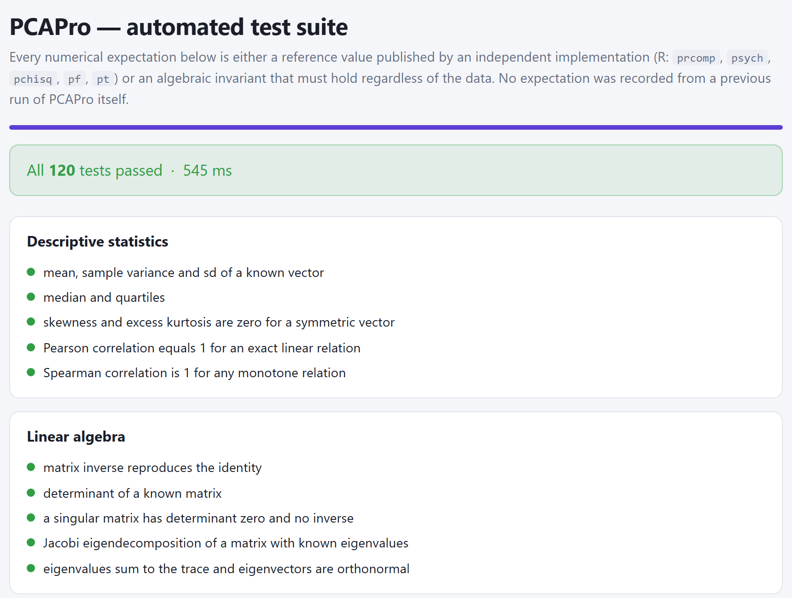

The appendices are not read straight through: they are consulted. Here are the exact rules with which the app reads and writes each file, the decision rules of the manual gathered together, a glossary of abbreviations, symbols and terms, the solutions to the most common problems, how the computations were checked against R and the full references of the methods.
Chapter 3 explains how to lay the data out (tables 3.1 to 3.4). This appendix gathers the exact rules: how the app reads a file, how it turns a text into a number and what each file it downloads holds.
| File | How it reads it | What is worth knowing |
|---|---|---|
Delimited text.csv .tsv .txt | By the extension. It is read as UTF-8 text and split into columns with the rules of section A.2. | It is always read offline. It is the safest format for exchanging data between programs. |
Excel workbook.xlsx .xls .xlsm | Everything that does not end in .csv, .tsv or .txt goes to the SheetJS spreadsheet reader (version 0.18.5). The first sheet is read; if there are several, Workbook sheet appears. | The reader is downloaded from the internet when the app opens: with no connection, save the sheet as CSV. The numbers in numeric cells arrive as numbers and do not depend on the decimal separator; dates arrive as text. |
In both cases the first non-empty row gives the column names (with no leading or trailing spaces) and completely empty rows are discarded. A column with no name is called V plus its position: V3 if it is the third. A row with fewer cells than the header is completed with missing values.
Weight (g; dry) adds a semicolon to the count.Each cell is cleaned before being converted: the spaces —including the non-breaking space— and a trailing % are removed, without dividing by 100. What is left must be a number with an optional + or - sign, digits, a decimal point and, if need be, an exponent (3e-4). Table A.2 shows what each option of Decimal separator does with the cases that usually cause doubt; the figures are the ones the app returns.
| Text in the cell | Detect automatically | Point (12.34) | Comma (12,34) | Comment |
|---|---|---|---|---|
12.5 | 12.5 | 12.5 | 125 | With Comma the points are deleted as thousands separators. |
12,5 | 12.5 | 125 | 12.5 | With Point the commas are deleted. |
0,5 | 0.5 | 5 | 0.5 | |
1,234 | 1.234 | 1234 | 1.234 | Ambiguous: the detection reads it as a decimal. |
1.234,5 | 1.2345 | 1.2345 | 1234.5 | Thousands with a point and decimals with a comma: choose Comma. |
1,234.5 | 1234.5 | 1234.5 | 1.2345 | Thousands with a comma and decimals with a point. |
12,3456 | 123456 | 123456 | 12.3456 | The detection accepts only one to three decimals after the comma. |
45% · 1 234 | 45 · 1234 | 45 · 1234 | 45 · 1234 | The % does not divide; the space does not separate. |
12.5 kg · −3 | not a number | Units inside the cell, or the typographic minus sign (−) instead of the hyphen (-). | ||
A text that is not a number shows: the column stops being numeric or the warning about non-numeric values appears. By contrast, 0,5 read as 5 is still a valid number and the column enters the analysis on a scale ten times larger. After loading a file with decimal commas, check the minimum and the maximum of each variable on card 1.2; with Excel workbooks there is no need, unless the numbers are stored as text.
The missing-value texts are those of table 3.2, regardless of case: empty cell, NA, N/A, NaN, null, nulo, ., -, --, ?, ND, S/D, SD, missing, faltante and the Excel errors #N/A, #¡DIV/0!, #VALUE! and #VALOR!. A column is numeric if at least 85 % of its present values convert into a number and there are three or more; table 3.4 gives the rest of the typing.
| File | Size | Contents and where it is used |
|---|---|---|
iris.csv | 150 × 5 | Fisher's four floral measurements (1936) and the species. The Real example: iris (150 × 4) button; sections 4.6, 6.3 and 8.6. |
practice1_soils.csv | 90 × 8 | Six soil properties, site and identifier. Section 3.8. |
practice2_seeds.csv | 120 × 11 | Nine seed traits, species and identifier. Sections 3.8 and 4.6. |
practice3_scales.csv | 100 × 9 | Seven variables on widely differing scales. Section 3.8. |
practice4_no_structure.csv | 80 × 8 | Six almost independent variables: the negative control. Sections 3.8 and 8.6. |
integrated_project_agronomy.csv | 150 × 16 | Twelve plant variables, treatment, block and yield. Chapters 4, 6, 7, 8 and 9. |
| Simulated example (not a file) | 120 × 11 | Leaf morphometry generated by the app from three latent factors, with a fixed seed, two empty cells and one NA. The Simulated example: leaf morphometry (120 × 9) button; chapter 5. |
Every table is written the same way: comma-separated CSV, UTF-8 with the initial mark —so that Excel shows the accents properly—, lines ending in CRLF, and double quotation marks around any field containing a comma, a semicolon, quotation marks or line breaks. The numbers go with a decimal point and all their digits, unrounded, except the correlation matrix of Block 1, which carries six decimal places. The name begins with that of the data file without its extension, with no accents and with underscores instead of spaces and signs: integrated_project_agronomy_loadings.csv.
| Block | File (after the name of the data) | Detail |
|---|---|---|
| B1 | _prepared_matrix.csv · _correlations.csv · _variable_summary.csv · _block1_report.txt | Card 1.8, section 3.6. The matrix already transformed and scaled, with the supplementary and qualitative variables at the end. The report is plain text with the diagnostics and the recommendations. |
| B2 | _eigenvalues.csv · _loadings.csv · _scores.csv | Table 4.8. With PCA only. The Retained column says yes or no. |
| B3 | _loadings_<method>.csv · _structure_<method>.csv · _component_correlation.csv · _scores_<method>.csv | Table 5.8. The method goes with its internal code: varimax, promax, oblimin… |
| B4 | _individuals.csv · _variables.csv · _supplementary.csv | Table 6.9. Coordinates, cos² and contributions. |
| B5 | _dimension_description.csv · _test_values.csv · _residuals.csv | Table 7.7. With PCA only. |
| B5b | _hcpc_assignment.csv · _hcpc_description.csv | Table 8.7. These two are written differently: with no UTF-8 mark, with LF line breaks, coordinates with six decimal places and the name of the data with its accents and spaces. |
| Figures | <figure>.svg · .png · .jpg · .webp | Table 6.13. Editable vector SVG; bitmaps from 2× to 12× the base size, with a white background or, in PNG, transparent. |
| B6 | _PCA_report.html · _PCA_complete.zip | Tables 9.4 to 9.6. The HTML is self-contained: it carries the figures inside. |
Structure of the ZIP package · integrated project with PCA, varimax and clustering (section 9.3)
integrated_project_agronomy_PCA_complete.zip ├── PCA_report.html the report; it prints to PDF from the browser ├── CITATION.bib the PCAPro reference in BibTeX ├── README.txt contents of the package and summary of the analysis ├── figures/ numbered in the order of the app │ ├── 01_<figure>.svg by default, SVG and PNG at 4× │ └── 01_<figure>.png … └── tables/ ├── 01_prepared_matrix.csv … 14_residuals.csv │ with other methods, fewer tables and different content └── 20_clusters_assignment.csv … 23_clusters_paragons.csv only if clustering was run
With the language in Spanish, the folders and files of the package are called figuras/, tablas/, informe_ACP.html and LEEME.txt, and the ZIP ends in _ACP_completo.zip; the tables keep their number.
The decision rules of the chapters, gathered in the order in which they appear, each with the section it comes from. They serve as a checklist during an analysis; the full reasoning is in the section cited.
| Criterion | Reference | What it says |
|---|---|---|
| n:p ratio | Common consensus | Between 5 individuals per variable (minimum) and 20 (ideal); 10:1 is what is usually asked for. |
| Absolute number | Comrey and Lee | 50 very poor, 100 poor, 200 fair, 300 good, 500 very good. |
| Strength of the structure | MacCallum and colleagues, 1999 | With high communalities (> 0.60) and three or four marker variables per component, 60 to 100 individuals may be enough; with low communalities (< 0.40) more than 300 may be needed. |
| For interpreting | Rule of thumb | At least three variables with a high loading on each component you retain. |
The modern rule is the third: how strong the structure is matters more than the raw number of rows. The Block 1 diagnostics compute the n:p ratio of your data and grade it.
| KMO | Kaiser's grade | What to do |
|---|---|---|
| ≥ 0.90 | Marvellous | Go ahead. |
| 0.80 – 0.89 | Meritorious | Go ahead. |
| 0.70 – 0.79 | Middling | Go ahead. |
| 0.60 – 0.69 | Mediocre | With reservations: state it when reporting. |
| 0.50 – 0.59 | Miserable | Review the variables with a low MSA. |
| < 0.50 | Unacceptable | Do not run the analysis with those variables. |
The same computation applied to each variable gives its MSA. Variables with MSA < 0.50 are removed one at a time, recomputing after each removal, because taking one out changes those of the rest.
| If you are going to… | then… |
|---|---|
| Publish in Spanish or teach a class | Choose Spanish before loading the data and leave it there. |
| Publish in English | Choose English before loading the data: the figures will come out with their titles and axes already in English, and so will the report. |
| Switch halfway through the analysis | Run the blocks again from the first one you want in the other language, in order, and edit the figures afterwards: running a block again erases the changes made to its figures. |
File names change with the language too: the report downloads as …_informe_ACP.html or …_PCA_report.html, and the tables in the ZIP go in tablas/ or in tables/.
| If your analysis used… | cite also |
|---|---|
| Any PCA | Pearson (1901) and Hotelling (1933), or a reference text such as Jolliffe (2002). |
| Parallel analysis to retain components | Horn (1965). |
| The MAP criterion | Velicer (1976). |
| Varimax or promax rotation | Kaiser (1958); Hendrickson and White (1964). |
| A test of sphericity | Bartlett (1950). |
| Clustering on the axes | Ward (1963); Husson, Josse and Pagès (2010). |
There is no need to look the full details up: the Methodological references section of the report carries them, and appendix F gathers them together.
| If the variable… | then |
|---|---|
| Describes the individuals from the same question as the others | Active. |
| Is the response you want to explain with the structure (yield, mortality) | Supplementary quantitative: that way you do not manufacture the relationship you want to find. |
| Is a design factor (treatment, block, site) | Qualitative / group, and outside the axes (section 1.4). |
| Is a sum, ratio or percentage of other active variables (area = length × width) | Keep either the original variables or the derived one, not both. |
| Measures another theme (climate among plant variables) | Supplementary, or else a multiple factor analysis with groups. |
The preparation button is enabled with two active variables, but a PCA with fewer than three rarely has anything to summarise. The n:p ratio indicator turns green from 10 individuals per variable, amber between 5 and 10, and red below 5.
| If your active variables… | then |
|---|---|
| Are in different units (%, ppm, cm, g) | z standardisation. That is the case in almost every agronomic and ecological study. |
| Share unit and scale and you want to keep them | Unscaled. The app considers this defensible, in amber, if the largest standard deviation is no more than 4 times the smallest; above that it marks it in red. |
| Have real outliers you do not want to remove | Robust, and compare with z. |
| Are intensities or spectra with dominant peaks | Pareto. |
If in doubt, standardise. A PCA on correlations is rarely a mistake; one on covariances with mixed units almost always is. Section 3.8 shows the case with figures.
| If… | then |
|---|---|
| Horn, broken stick and MAP agree | That is the number. The other criteria only confirm it. |
| Horn gives more than the broken stick and the MAP | Stay within the range between the two and choose by interpretability (section 4.3). |
| Only Kaiser or Jolliffe ask for one more axis | Do not add it because of them: they are the ones that overestimate most. |
| The PCA is on covariances | Ignore Kaiser and Jolliffe; the mean rule is their equivalent, but Horn by permutation is still valid. |
| An axis meets the numbers but cannot be named | Do not retain it: the interpretability criterion prevails. |
The parallel analysis uses random numbers: on repeating the extraction the 95th percentile changes by a few hundredths (1.597, 1.590 and 1.589 for PC1 of the seeds in three runs). If a λ falls within 0.02 of its percentile, Horn's vote may change from run to run; raise it to 1000 repetitions before deciding.
| If your sample has… | highlight from |
|---|---|
| n ≥ 300 | 0.30 to 0.40 |
| 100 ≤ n < 300 | 0.40 (the default value) |
| n < 100 | 0.55, as the size recommendation of Block 1 asks |
| You want only what is very clear, for a summary | 0.70: the variable shares half its variance with the axis |
A loading of 0.40 amounts to 16 % of variance shared with the component; one of 0.70, to 49 %.
| If your aim is to… | then |
|---|---|
| Interpret and name the dimensions | Rotate. That is what rotation exists for. |
| Use the scores in another analysis (regression, clustering) | Probably not: the unrotated components are orthogonal and ordered, exactly what that analysis needs. |
| You have a single component retained | It cannot be done: the app asks for at least two and says so. |
| The unrotated solution is already simple | Rotate anyway to check; if it does not improve, report it unrotated (section 5.3). |
Rotating principal components is accepted practice —SPSS, SAS and psych::principal offer it— as long as it is stated. The theory card of the block includes the usual wording for the methods section.
| Apply an oblique rotation first (promax) and look at the largest |Φ| off the diagonal. If it is… | then |
|---|---|
| below 0.15 | The axes came out almost orthogonal on their own: go back to varimax, which is more parsimonious. |
| between 0.15 and 0.32 | The oblique one is justified, but the orthogonal one will give almost the same: compare and choose the clearer. |
| 0.32 or more | The components share more than 10 % of variance: use the oblique one and interpret the pattern. |
These are the same cut-offs used by the automatic note under the Φ table. With the leaf morphometry the largest |Φ| is 0.244 with two components and 0.309 with three: the two rotations tell the same story.
| cos² on the 1–2 plane | Label in the app | Reading |
|---|---|---|
| ≥ 0.70 | very good | Its position is reliable. |
| 0.50 to 0.70 | acceptable | Read it, with care over the details. |
| 0.30 to 0.50 | poor | Only the general direction. |
| < 0.30 | not interpretable | It is badly projected: its information is on other axes. Look for another plane. |
A short vector is not an unimportant variable: it is a variable this plane does not show. An individual with a high contribution and a low cos² is suspicious: it is usually an outlier dragging the axis.
| Yes | No |
|---|---|
| The projection of an individual onto the direction of an arrow: far along its direction, high values on that variable. | The absolute length of an arrow compared with the distance between points. |
| Groups of individuals in the direction of a group of variables: they are characterised by them. | The distance between a point and the tip of an arrow. |
| If the journal… | then |
|---|---|
| Accepts vectors (PDF, EPS, SVG) | SVG: it scales without losing sharpness and it can be edited in Inkscape or Illustrator. |
| Asks for a bitmap | PNG at 8× (~600 dpi); 4× as a minimum. |
| Prints in black and white, or you want accessibility | The Okabe–Ito or Greyscale palette, and Cividis for continuous scales. |
| The figure goes in a presentation with a coloured background | PNG with a transparent background, or the Dark theme. |
Always put the percentage on the axes, state whether the solution is rotated and say in the caption which ellipse you used. The sign of an axis is arbitrary: if you invert it to read it better, say so.
| Question | If the answer is no… |
|---|---|
| Does it sum up all the marker variables, not just the first? | Look for a more general term, or check whether two themes are mixed. |
| If it is a contrast, does it say what lies at each end? | Use the form “A against B”, or a gradient name: “blade thickness”. |
| Do the supplementary variables and the extreme individuals confirm it? | The name describes the loadings, but not the system: think again. |
| Would a reader understand it without seeing the table? | Avoid column names: “Growth”, not “Height_cm, Biomass_g”. |
The sign of an axis is arbitrary. Name the axis by its positive end and, if you invert the sign in one figure to read it better, do so in all of them and say so.
| |v| | Reading |
|---|---|
| < 1.96 | The category is not distinguishable from the centre on that axis (in grey). |
| ≥ 1.96 (*) | It characterises the axis with p < 0.05; the sign says on which side. |
| ≥ 2.58 (**) | p < 0.01. |
Order by |v|: the categories with the highest value are the ones that best characterise the axis. With a large n almost any small difference goes above 1.96: look also at the distance of the centroid on the map.
| RMSR | Reading |
|---|---|
| < 0.05 | Good fit: the solution reproduces the structure. |
| 0.05 to 0.08 | Acceptable. |
| > 0.08 | Structure is being lost: consider retaining one more component in Block 2. |
A complement: that fewer than 10 % of the pairs have a residual above 0.05. One particular pair with a large residual points to a relationship that no axis takes up. With the integrated project, 4 components give RMSR = 0.029 and 8 of 66 pairs; with 3, RMSR = 0.105 and 19 of 66: the fourth component is needed.
| If… | then |
|---|---|
| The three rules agree and the silhouette is ≥ 0.50 | That number is a property of the data: report it as such. |
| They disagree, but one option makes sense in your discipline | Choose it in Number of clusters and say that it was a decision, with the numbers of each rule. |
| The silhouette of the best option is < 0.25 | There are no clusters to report: the cloud is continuous. |
| The jump chooses 2 and the other rules a high number with a low silhouette | Distrust the high number: it is usually the continuous cloud cut into slices (case 3 of section 8.6). |
You do not cut at the tallest bar of the figure, but where the bars stop being tall: the last number that still “buys” inertia.
| If the package is for… | then |
|---|---|
| Archiving the analysis or sharing it with co-authors | SVG and PNG at 4×, the default options. |
| Sending the figures to a journal | SVG, or PNG at 8×. Check the weight first: with many figures, 8× and 12× can reach hundreds of MB. |
| An email or a presentation | PNG at 2×, or just the HTML report. |
The ZIP is stored without compression so as not to depend on external libraries: if it weighs too much, compress it afterwards with your operating system.
Topic 12 of the Block 1 theory, Common mistakes that ruin a PCA, points to this appendix. Table B.1 links each mistake with the part of the manual that prevents it.
| Mistake | How the app or the manual prevents it | Section |
|---|---|---|
| Putting in variables derived from others: area = length × width, percentages that add up to 100. | The diagnostics flag the near-zero determinant and the singular matrix; remove the derived variable or one of the parts. | 3.5, 3.8 |
| Not standardising with different units. | The scales point of the list of recommendations and the “how do I scale?” rule. | 3.4, 3.6 |
| Interpreting small loadings. | Setting the threshold before looking and sticking to it. | 4.4, 5.4 |
| Retaining components by Kaiser alone. | Eight criteria and a weighted consensus in which Horn weighs most. | 4.2, 4.3 |
| Interpreting a 1–2 plane that explains little, without saying so. | The plane inertia indicator and the cos² of each element. | 6.2 |
| Forgetting that the sign of an axis is arbitrary. | Naming the axis by its two poles. | 7.1 |
| Confusing the closeness of individuals with that of variables on a biplot. | The “what is read on a biplot?” rule. | 6.3 |
| Using PCA as a hypothesis test or as a discriminant method. | Comparing groups with supplementary variables, without circularity. | 7.3, 8.5 |
| Not reporting the preprocessing. | The appendix of the report and the corrected methods paragraph. | 9.2, 9.4 |
The abbreviations and symbols that appear in the app and in the manual, and the technical terms with the section where they are explained in more detail.
| Abbreviation | Meaning |
|---|---|
| PCA | Principal component analysis (ACP in Spanish). |
| CA | Simple correspondence analysis (AC). |
| MCA | Multiple correspondence analysis (ACM). |
| FAMD | Factor analysis of mixed data (AFDM). |
| MFA | Multiple factor analysis (AFM). |
| EFA | Exploratory (common) factor analysis; PCAPro does not do it. |
| HCPC | Hierarchical clustering on principal components. |
| PC1, PC2… | Principal components of the PCA. |
| RPC1… | Rotated components (Block 3). |
| Dim1, Dim2… | Axes of the other methods. |
| KMO | Kaiser-Meyer-Olkin index. |
| MSA | Measure of sampling adequacy of one variable. |
| MAP | Velicer's minimum average partial criterion. |
| RMSR | Root mean square residual. |
| RV, Lg | Coefficients of relation between the groups of the MFA. |
| SE | Standard error. |
| BOM | Initial mark of a UTF-8 file. |
| dpi | Dots per inch of an image. |
| Symbol | Meaning |
|---|---|
| n | Number of individuals (rows analysed). |
| p | Number of active variables. |
| k | Components or axes retained. |
| q | Number of clusters in the clustering. |
| Q, J | Qualitative variables and categories in total (MCA, FAMD). |
| λ | Eigenvalue: variance or inertia of an axis. |
| h² | Communality of a variable. |
| cos² | Quality of representation. |
| ctr | Contribution to an axis, in %. |
| Φ | Correlations between oblique components. |
| δ, κ | Parameters of oblimin and of promax. |
| v | Test value. |
| χ² | Chi-square (Bartlett, CA). |
| η², ω² | Proportion of variance explained by a factor. |
| r, r² | Pearson correlation and its square. |
| V | Cramér's V between two qualitative variables. |
| s | Mean silhouette of a partition. |
| D² | Squared Mahalanobis distance. |
| Term | Definition | Section |
|---|---|---|
| A | ||
| Active element | Variable or individual that takes part in the computation of the axes. | 3.3 |
| Benzécri and Greenacre adjustment | Correction of the inertia percentages of the MCA, which without it underestimate what each axis explains. | 4.5 |
| Biplot | Individuals and variables on the same plane; the individuals are read by distances and the variables by angles. | 6.3 |
| Broken stick | The share-out of variance that chance would give when breaking a segment into p pieces; the components that exceed it are retained. | 4.2 |
| C | ||
| Centroid | Mean point of the individuals of a category; that is how a supplementary qualitative variable is projected. | 6.4 |
| Communality | The part of the variance of a variable reproduced by the k retained components: the sum of its squared loadings. | 4.1 |
| Consensus | The number of components the app recommends: the mode of the criteria, weighted by their reliability. | 4.3 |
| Consolidation | Reassignment of each individual to the nearest centre after cutting the tree (k-means). | 8.4 |
| Contingency table | Counts of two crossed qualitative variables; it is the input of the CA. | 4.5 |
| Contribution | Percentage of the variance of an axis an element provides; those of all the active elements add up to 100. | 6.2 |
| Correlation circle | Map of the variables with radius 1; a long arrow is well represented on the plane. | 6.3 |
| cos² | Fraction of the distance from the centre of an element that is left on an axis or plane; close to 1, well represented. | 6.2 |
| D | ||
| Dendrogram | Tree of the fusions of the clustering; the height of each union is the inertia that is lost. | 8.2 |
| Dimension description | List of the variables and categories significantly associated with each axis. | 7.2 |
| E | ||
| Eigenvalue | Variance (or inertia) a component or axis captures. | 4.1 |
| Eigenvector | Direction of a component; its elements are the coefficients of each variable. | 4.1 |
| Elbow | Point of the scree plot where the fall of the λ flattens out (Cattell's criterion). | 4.2 |
| Concentration and confidence ellipse | The first encloses most of the individuals of a group; the second, the likely position of its mean. | 6.4 |
| G · H | ||
| Group (MFA) | Set of variables that measure one same aspect; the MFA balances their weight. | 4.5 |
| Hofmann complexity | Effective number of components a variable loads on; it is 1 with a perfect simple structure. | 5.3 |
| I · L | ||
| Inertia | Total spread of a cloud of weighted points; in PCA on correlations it is worth p. | 4.5 |
| Between- and within-cluster inertia | The parts of the inertia that separate the clusters and that remain inside them; their ratio measures the quality of the partition. | 8.1 |
| Loading | Correlation between a variable and a component in PCA on correlations. | 4.1 |
| Loading threshold | Absolute value from which a loading is interpreted. | 5.4 |
| M · O | ||
| Multivariate outlier | Individual whose Mahalanobis distance exceeds the 99.9th percentile of the χ² with p degrees of freedom. | 3.5 |
| Orthogonal and oblique rotation | Turn of the retained axes to come closer to the simple structure; the oblique one allows them to correlate. | 5.2 |
| P | ||
| Paragon | Individual closest to the centre of its cluster: the most representative one. | 8.4 |
| Parallel analysis | Horn's criterion: retain the components whose λ exceeds the 95th percentile of the λ of data without structure of the same size. | 4.2 |
| Partial points | Position of an individual as seen from a single group of the MFA; the overall point is their barycentre. | 6.5 |
| Pattern matrix | Regression weights of each variable on the rotated components; with oblique rotations it can exceed 1. | 5.2 |
| R | ||
| Residual | Difference between the observed correlation and the one the k components reproduce. | 7.4 |
| Role of a variable | Active, supplementary quantitative, qualitative, identifier or excluded. | 3.3 |
| S | ||
| Sampling adequacy | The degree to which the correlations between variables are due to common factors and not to isolated pairs; it is measured with the overall KMO and the MSA of each variable. | 3.5 |
| Scaling | Change of units before the analysis: z standardisation, Pareto, VAST, range, robust, centre only or unscaled. | 3.4 |
| Score | Coordinate of an individual on a component. | 4.1 |
| Scree plot | The eigenvalues in decreasing order. | 4.2 |
| Silhouette | It compares, for each individual, the distance to its own cluster with that of the neighbouring cluster; it runs from −1 to 1. | 8.3 |
| Simple structure | Solution in which each variable loads strongly on a single component and almost zero on the others (Thurstone). | 5.3 |
| Sphericity, test of | Bartlett's test that the correlation matrix is the identity; rejecting it is the minimum condition for summarising. | 3.5 |
| Structure matrix | Correlations between variables and rotated components; with an orthogonal rotation it coincides with the pattern. | 5.2 |
| Supplementary element | Variable or individual projected onto the axes without taking part in their computation. | 6.4 |
| T · W | ||
| Test value | Difference between the mean of a category on an axis and the overall mean, in units of standard error; |v| ≥ 1.96 is flagged. | 7.2 |
| Transformation | Change in the shape of a variable before scaling: logarithm, square root or inverse. | 3.4 |
| Ward's criterion | At every step it joins the two clusters whose fusion increases the within-cluster inertia least. | 8.2 |
| Weighted mode | Vote of the criteria with weights: Horn 3, broken stick and MAP 2, the rest 1; ties go to the smaller number. | 4.3 |
The messages of the app, grouped by the moment at which they appear, with their cause and what is worth doing. At the end, the known behaviours of version 1.1 that the manual points out in each chapter.
| Message or symptom | Cause | What to do |
|---|---|---|
| “The example could not be loaded (…)” | The app was opened with a double click: the browser does not allow files to be read from the folder on its own. | Load datos/iris.csv with the file picker, or open the app with servidor.ps1 (table 1.4). |
| “The Excel file could not be read: …” | With no connection the spreadsheet reader is not downloaded; or the workbook is damaged or password protected. | Save the sheet as CSV UTF-8 (comma delimited) and load that file. |
| “The CSV could not be read: …” | The file is empty or it is not text. | Open it in a text editor; if it cannot be read, export it again from the program of origin. |
| “The sheet is empty.” | The first sheet of the workbook has no data. | Choose another in Workbook sheet. |
| Everything ends up in a single column | The separator detected in the first line is not the one of the file. | Choose the separator in Column separator (CSV) and drag the file in again. |
Accents replaced by é or � | The CSV is not in UTF-8 (typical of “CSV comma delimited” in Excel). | Save it as CSV UTF-8. |
| “Fewer than 2 active numeric variables were detected…” | The wrong decimal separator, units in the cells or columns marked as a group. | Check table A.2; mark the measurement columns as Active by hand. |
| A variable with values 10 or 1000 times larger | A decimal comma read with Point (12.34), or 1.234,5 with automatic detection. | Choose Comma (12,34) and press Restore automatic detection. |
| A numeric column comes out as an identifier or a group | A 1, 2, 3 code looks like a group (the “group code?” warning); a numeric key 1…n looks like a measurement. | Correct the role on card 1.2 (section 3.3). |
| Cells that empty themselves | The text is a missing-value code: SD, ND, -… | Rename those values before loading. |
| “Fewer than 3 complete rows remain…” | With Delete incomplete rows, almost every row has some missing value. | Impute by mean or median, or take out the variable with the most missing values. |
| “The transformation requested requires positive values; they were shifted…” | Zeros or negatives in a variable with a logarithm or a root. | A warning, not an error: report the constant added or choose another transformation. |
| “Error in the computation: …” | A combination of data and options the computation does not admit. | Check the roles and the missing values; the text after the colon indicates the cause. |
| Message or symptom | Cause and what to do | Section |
|---|---|---|
| A button of the step bar does not respond | The blocks unlock in order: the previous one has to be run first. | 2.1 |
| “MCA needs at least two qualitative variables.” · “FAMD needs at least one qualitative variable…” · “Choose two different variables for rows and columns.” | Qualitative variables with the right role are missing for the method chosen on card 1.9. | 3.7 |
| “MFA needs at least two groups.” · “The group ‘X’ has a single variable…” | Assign each variable to a group, with at least two variables per group. | 3.7 |
| “The variable ‘X’ is constant.” · “The contingency table is empty.” | A quantitative variable with no variation or two qualitative ones with no data in common, in FAMD, MFA or CA. | 4.5 |
| Horn's 95th percentile changes on repeating | Normal: it uses resampling. Raise the iterations if the decision depends on the last digit. | 4.2 |
| The signs do not match another program | Normal: the sign of an axis is arbitrary. Compare absolute values, or invert the whole axis. | 7.1 |
| “Extract the components in Block 2 first.” · “The rotation needs at least 2 components…” | Go back to Block 2 and extract, with k ≥ 2. | 5.1 |
| “The algorithm did not reach the tolerance in … iterations.” | It is usually due to nearly redundant variables or to too many components. Try another rotation or lower k. | 5.2 |
| “The correlation matrix is singular…” | There is a variable that is an exact combination of others: with no inverse there are no oblique scores. Remove it. | 3.5, 5.2 |
| “The factor maps need at least 2 retained components.” | A single component does not form a plane: raise k in Block 2. | 6.1 |
| “There are no supplementary elements defined.” · “There are no categorical variables defined.” | Assign those roles on card 1.2 and prepare the matrix again. | 3.3 |
| “Build the factor maps in Block 4 first.” | Block 5 uses the coordinates of Block 4. | 7.1 |
| “There is no factor solution to cluster yet.” · “Number of clusters out of range.” | Run a method before 5b; the number of clusters runs from 2 to the maximum on the card. | 8.1 |
| “There are … individuals: the Ward tree may take a while…” | A warning with more than 900 individuals; wait a few seconds. | 8.2 |
| Message or symptom | Cause and what to do | Section |
|---|---|---|
| “Could not export: …” | The browser could not turn the figure into an image, for instance for lack of memory at a very high scale. Lower the scale or download the SVG. | 6.6 |
| “Could not copy automatically…” | The browser did not grant access to the clipboard. Select the text and copy it by hand. | 7.5 |
| “You need to have extracted the components at least (Block 2)…” | The report needs the extraction as a minimum. | 9.1 |
| “The browser blocked the pop-up window…” | Printing to PDF opens a new window. Allow pop-up windows for the site, or download the HTML and print it. | 9.2 |
| “The package could not be generated: …” | Not enough memory with many figures at 8× or 12×. Lower the resolution or choose SVG only. | 9.3 |
| Figures missing from the report | Only those on visible cards go in. Press ↻ Refresh on card 6.1 after changing something. | 9.1 |
| The analysis disappeared | The page was reloaded: the app only saves the language. Download the package before closing. | 1.5 |
Details of the interface and of the generated text that do not alter the computations, but that are worth checking before publishing.
| What happens | How to work around it | Section |
|---|---|---|
The decimal detection reads 1.234,5 as 1.2345 and 12,3456 as 123456. | With thousands, or more than three decimals after the comma, choose Comma (12,34). | A.3 |
| The list of criteria of Block 2 is not redrawn when the number of components changes. | Go by the criteria figure and the indicators, which do update. | 4.3 |
| With other methods, Block 2 has no downloads and no button towards the rotation, and the scree plot does not move the band of retained axes. | Move to Block 4 with the step bar; the tables are in the ZIP package. | 4.5 |
| With an oblique rotation, the percentages per component add up to more than the real variance. | Report the joint variance of Block 2 and, for each component, its loadings. | 5.2 |
| With the rotated solution, the scores correlate and the cos² of a supplementary variable can exceed 1. | Report the cos² of the supplementary variables with the unrotated solution. | 6.4 |
| The draft of Block 5 always cites Horn and the scree plot. | Correct the sentence with the criteria you actually used. | 7.5 |
| With other methods, the first line of the draft falls outside the box, and the group picker may keep the qualitative variables of another file. | Enter Block 5 with Go to interpretation → from Block 4. | 7.6 |
| On opening Block 5b with the step bar, the settings are left empty and clustering gives an error. | Enter with Cluster the individuals (HCPC) →, at the end of Block 5. | 8.1 |
| With a number of clusters other than the consensus, the draft and the indicator still say that the rules agree. | Correct the sentence: “the three rules indicated 2 clusters; 3 were retained because…”. | 8.4 |
| A section of the report unticked because its block had not been run stays unticked after running it. | Tick it by hand on card 6.2. | 9.1 |
The methods paragraph says “combining” every criterion; with other methods it has wording errors; the appendix shows internal codes (listwise, none, z). | Rewrite the paragraph with the guidance of section 9.4 and translate the codes. | 9.4 |
A statistical program deserves trust when its results agree with those of independent implementations. PCAPro comes with a battery of tests that anyone can run, and this appendix additionally compares its results with those of R.
The tests/ folder holds 120 tests grouped into 19 suites. Each expected value is of one of two kinds: a figure published by another implementation —R and its packages, or a classic example from the literature— or an algebraic property that must hold with any data, such as the contributions to an axis adding up to 100. No expected value was copied from an earlier run of PCAPro: comparing the program with itself would prove nothing.

tests/index.html page when it finishes: the green box with the 120 tests passed and the time, and below it each suite with its tests. A failed test would appear flagged, with the message that explains the difference.| Suite | Tests | What it checks and against what |
|---|---|---|
| Descriptive statistics | 5 | Mean, variance, quartiles, skewness, kurtosis and correlations with vectors of known result. |
| Linear algebra | 5 | Inverse, determinant, singular matrix and Jacobi decomposition: the sum of the λ is the trace and the vectors are orthonormal. |
| Probability distributions | 6 | Tails of χ², t, F and normal, and the test of a correlation, against R's pchisq, pt, pf and cor.test. |
| Sampling adequacy (iris) | 3 | KMO and MSA against psych::KMO; Bartlett against psych::cortest.bartlett; Mahalanobis distances. |
| Extraction (iris) | 7 | Eigenvalues and scores against prcomp; loadings against psych::principal; broken stick and MAP. |
| Rotation | 10 | Varimax recovers a simple structure turned on purpose; invariant communalities; coherent pattern, structure and Φ; quartimin = oblimin with δ = 0. |
| Coordinates and quality | 5 | cos² and contributions add up to what they should; ellipses and hull. |
| Group comparison | 3 | The ANOVA of an example that can be computed by hand, and Kruskal-Wallis. |
| Correspondence analysis | 11 | Principal inertias of Greenacre's smoking example (1984): 0.074759, 0.010017 and 0.000414; χ² = 16.4417 with n = 193. Row and column coordinates, cos² and contributions against FactoMineR::CA; transition formula and projection of supplementary rows. |
| Multiple correspondence | 7 | The exact identity with two variables, λ = (1 ± √λCA)/2, which also gives the standard coordinates of the CA; each category is the quasi-barycentre of its individuals; the Benzécri adjustment recovers the percentages of the CA. |
| Generalised SVD core | 3 | With uniform weights it reproduces the PCA; reconstruction and orthonormality. |
| Mixed data (FAMD) | 7 | Quantitative only: it is the PCA; qualitative only: it is the MCA; total inertia p + J − Q. With iris, coordinates, cos² and contributions against FactoMineR::FAMD; what is reported is what is drawn. |
| Multiple factor (MFA) | 5 | No group contributes more than 1 to the first axis; duplicating a group doubles the λ; RV symmetric in [0, 1]. |
| Clustering (HCPC) | 10 | Increasing Ward heights; the inertia decomposes; the consolidation does not worsen it; with iris it finds the two real clusters. |
| Dendrogram | 6 | A tree of 2n − 1 nodes, with no inversions, with contiguous clusters and the cut line in its place. |
| Method recommender | 11 | Scenarios with an answer known by construction; every warning carries a figure. |
| File reading | 6 | Quotation marks, semicolon separator, empty lines, CRLF, typing and missing-value codes. |
| Export | 3 | CRC32 against its canonical value, the ZIP opens and verifies, quotation marks in the CSV. |
| Figures | 7 | Well-formed SVG, font scales, colour contrast and complete palettes. |
servidor.ps1, open http://localhost:8790/tests/index.html. The tests run on their own in a few seconds and the box at the top says how many passed.node tests/run-tests.mjs opens the same page, waits for the result and exits with code 1 if any test fails. It is the check the continuous integration of the repository runs on every change, together with the next step.node lib/reproduce-iris.js loads the same numerical engine of the app as a Node module, repeats the PCA of iris and compares 15 values with R. It needs neither a server nor Playwright.Output of node lib/reproduce-iris.js · extract
iris: 150 observations × 4 active variables value PCAPro reference ✔ λ1 (R: prcomp) 2.918498 2.918498 ✔ λ2 (R: prcomp) 0.914030 0.914030 ✔ λ3 (R: prcomp) 0.146757 0.146757 ✔ λ4 (R: prcomp) 0.020715 0.020715 ✔ overall KMO (R: psych::KMO) 0.540077 0.540000 ✔ MSA Sepal.Width 0.269575 0.270000 ✔ Bartlett χ² 706.959243 706.959300 ✔ |loading| Petal.Length on PC1 0.991555 0.991600 … Every value agrees with independent implementations.
The tolerance of each comparison is the precision with which R publishes the reference: 10−5 for the eigenvalues, which R prints with six decimal places, and 10−3 for the KMO and the loadings, which are printed with three or four. To demand more would be to demand agreement with a rounding.
The code below, with the packages psych, FactoMineR and GPArotation, gives the reference values of iris and of the smoking table. It was run with R 4.4.2, and table E.2 compares its output with that of PCAPro 1.1.0.
R script
X <- iris[, 1:4] pca <- prcomp(X, scale. = TRUE) pca$sdev^2 # eigenvalues cor(X, pca$x)[, 1] # loadings on PC1 head(pca$x[, 1], 3) # scores of the first three individuals library(psych) KMO(X) # overall KMO and MSA cortest.bartlett(cor(X), n = 150) # test of sphericity library(FactoMineR) res <- PCA(X, graph = FALSE) res$var$contrib[, 1:2]; res$var$cos2[, 1:2] library(GPArotation) L <- cor(X, pca$x)[, 1:2] GPForth(L, method = "varimax", normalize = TRUE)$loadings
R script · correspondence analysis of the smoking data (Greenacre, 1984)
library(FactoMineR)
smoke <- matrix(c(4, 2, 3, 2, 4, 3, 7, 4, 25, 10, 12, 4,
18, 24, 33, 13, 10, 6, 7, 2), nrow = 5, byrow = TRUE,
dimnames = list(c("SM", "JM", "SE", "JE", "SC"),
c("none", "light", "medium", "heavy")))
ca <- CA(as.data.frame(smoke), graph = FALSE)
ca$row$coord[, 1] # rows on Dim1
ca$col$coord[, 1] # columns on Dim1
| Result | R | PCAPro | |
|---|---|---|---|
λ1 · λ2 · λ3 · λ4 (prcomp) | 2.918498 · 0.914030 · 0.146757 · 0.020715 | equal to 6 decimal places | ✔ |
Loadings on PC1 (cor) | .8902 · −.4601 · .9916 · .9650 | .8902 · −.4601 · .9916 · .9650 | ✔ |
| Scores of individuals 1–3 on PC1 | −2.257141 · −2.074013 · −2.356335 | −2.257141 · −2.074013 · −2.356335 | ✔ |
Overall KMO · MSA (psych) | .540077 · .584060 · .269575 · .530748 · .634207 | equal to 6 decimal places | ✔ |
| Bartlett: χ² · df · determinant | 706.9592 · 6 · 0.0081096 | 706.9592 · 6 · 0.0081096 | ✔ |
Contributions to Dim1 (FactoMineR) | 27.15 · 7.25 · 33.69 · 31.91 | 27.15 · 7.25 · 33.69 · 31.91 | ✔ |
Varimax with k = 2, first column (GPArotation) | .9594 · −.1425 · .9436 · .9319 | .9594 · −.1425 · .9436 · .9319 | ✔ |
CA of the smoking data: coordinates of SM, JM, SE on Dim1 (FactoMineR::CA) | |.0658| · |.2590| · |.3806| | |.0658| · |.2590| · |.3806| | ✔ |
CA of the smoking data: coordinates of none, light, medium, heavy on Dim1 (FactoMineR::CA) | |.3933| · |.0995| · |.1963| · |.2938| | |.3933| · |.0995| · |.1963| · |.2938| | ✔ |
In PCAPro 1.1.0 the coordinates of the columns of the CA, and those of the categories of the MCA, came out multiplied by the mass of each column: with the smoking data, none ended up at |.1243| instead of |.3933|, and the map brought the columns closer to the origin. In FAMD, card 2.5, the report and the ZIP package gave for each category a coordinate and a cos² that were not those of the point drawn on the map: with iris, setosa at −0.765 instead of −2.606. Eigenvalues, rows and individuals and contributions were correct in all three methods. This is fixed by the version published on GitHub on 16 September 2026, which gives the last row of table E.2; the nine tests added with it already count in table E.1. With results from 1.1.0, repeat the analysis; in CA and MCA it is enough to divide each column coordinate by its mass, the proportion of that column in the total.
PCA() standardises by dividing by n and not by n − 1, so its coordinates are those of PCAPro and prcomp multiplied by √(n/(n − 1)): −2.2647 instead of −2.2571 with iris. Eigenvalues, loadings, cos² and contributions agree.stats::varimax. It stops with a loose tolerance and gives .9593 · −.1446 · .9442 · .9324. PCAPro carries on to the maximum of the criterion, like GPArotation.HCPC. FactoMineR suggests a cut with at least three clusters by default (min = 3) and with iris proposes 50/53/47; PCAPro considers from two upwards and its rules choose two (section 8.6). Even with three clusters, the partitions may not match, because they depend on how many axes are used.The sources of the methods PCAPro implements and of the rules cited in the manual. Those marked with ◆ appear in the Methodological references section of the report (section 9.2).